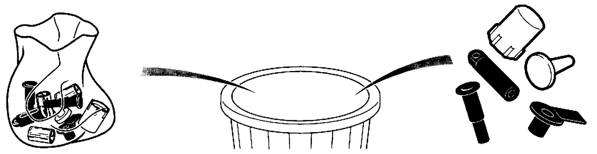

1G
| Precautions for Fuel System Service |
Service operation of any type performed on the fuel system involves a risk of fire and personal injury if proper precautions are not taken.
Take the following precautions whenever working on the fuel system.
•Disconnect the negative (–) cable at the battery.
•Do not smoke. Put up no smoking signs around the work area.
•Have CO2 fire extinguishers handy.
•Perform service operations only in a well-ventilated area away from any open flames such as gas water heaters.
•Wear safety glasses.
•Remove the fuel filler cap from the fuel filler neck to relieve the fuel tank of fuel vapor pressure, and then reinstall the cap.
•Before loosening or disconnecting the fuel feed line, relieve the fuel system of fuel pressure by following Fuel Pressure Relief Procedure:D16AA.
•When disconnecting a fitting on the fuel line, cover the fitting with a shop cloth to soak up the small amount of fuel that may flow out from the disconnected fuel line. Put the used cloth in an approved container.
•Never run the engine with the fuel pump relay disconnected when the engine and exhaust system are hot.
•Since fuel hose connections vary with the pipe type, connect and clamp each hose using the correct method for each specific connection.
After connecting a hose, check that there is no twist or kink in the hose.
•When installing an injector or a fuel feed pipe, lubricate its O-rings with fuel.
•Do not set ignition “ON” with disconnecting fuel pipe and/or removing fuel system components.
•Handle the fuel tank carefully. Do not allow it to touch sharp edges or hot surfaces. Do not drop it. If the tank is dropped, the tank and all components on and in it should be replaced because they may have been damaged.
•When any pit and/or crack is found in fuel tank, never repair the tank but always replace it with a new fuel tank.
•As fuel tank is made of plastic, when solvent such as grease and sealant is allowed to contact fuel tank, some chemical reaction may occur, causing fuel tank to be swollen, hardened or deformed, resulting in fuel leakage from fuel tank.
Do not allow solvent such as grease or sealant to contact fuel tank. In addition, wipe off any solvent such as grease or sealant when it contacts tank, without delay.
•Do not smoke. Put up no smoking signs around the work area.
•Have CO2 fire extinguishers handy.
•Perform service operations only in a well-ventilated area away from any open flames such as gas water heaters.
•Wear safety glasses.
•Remove the fuel filler cap from the fuel filler neck to relieve the fuel tank of fuel vapor pressure, and then reinstall the cap.
•Before loosening or disconnecting the fuel feed line, relieve the fuel system of fuel pressure by following Fuel Pressure Relief Procedure:D16AA.
•When disconnecting a fitting on the fuel line, cover the fitting with a shop cloth to soak up the small amount of fuel that may flow out from the disconnected fuel line. Put the used cloth in an approved container.
•Never run the engine with the fuel pump relay disconnected when the engine and exhaust system are hot.
•Since fuel hose connections vary with the pipe type, connect and clamp each hose using the correct method for each specific connection.
After connecting a hose, check that there is no twist or kink in the hose.
•When installing an injector or a fuel feed pipe, lubricate its O-rings with fuel.
•Do not set ignition “ON” with disconnecting fuel pipe and/or removing fuel system components.
•Handle the fuel tank carefully. Do not allow it to touch sharp edges or hot surfaces. Do not drop it. If the tank is dropped, the tank and all components on and in it should be replaced because they may have been damaged.
•When any pit and/or crack is found in fuel tank, never repair the tank but always replace it with a new fuel tank.
•As fuel tank is made of plastic, when solvent such as grease and sealant is allowed to contact fuel tank, some chemical reaction may occur, causing fuel tank to be swollen, hardened or deformed, resulting in fuel leakage from fuel tank.
Do not allow solvent such as grease or sealant to contact fuel tank. In addition, wipe off any solvent such as grease or sealant when it contacts tank, without delay.
•Fuel system must be checked for fuel leakage after service work.
•Fuel system is very sensitive to contamination. Problems caused by introduction of contamination into the system include:
•Avoid especially the following contaminants.
•Wear clean overalls.
•Prepare plugs or covers for closing disconnected unions to prevent any entry of impurities into fuel system.
•Plug or cover unions as soon as possible when removing / disconnecting fuel system component to prevent dust from entering.
Similarly, remove plugs or covers only immediately before installing / connecting fuel system component.
•Keep removed fuel system parts in plastic bags with hermetically closing fasteners to protect them from impurities. Plastic bags must be used only once.
 •Use only lint-free cloth for wiping fuel system parts. Never use any other wiping materials. Lint-free cloth must be used only once.
•Use only lint-free cloth for wiping fuel system parts. Never use any other wiping materials. Lint-free cloth must be used only once.
•Keep plugs or covers installed unless their removal is absolutely necessary to prevent impurities from entering the system.
•Follow the instructions below before opening the fuel circuit.
•Fuel system is very sensitive to contamination. Problems caused by introduction of contamination into the system include:
—Damage to or destruction of high pressure injection system and engine.
—Seized or leaky component.
•When servicing high pressure direct injection system, perform operation in very clean condition. Never allow any contamination to get into fuel system during removal of components and disconnection of unions. Maintaining cleanliness is especially important when servicing any part between fuel filter and injectors.—Seized or leaky component.
•Avoid especially the following contaminants.
—Metal or plastic chips
—Paint
—Fibres from boxes, brushes, paper, clothing or cloths
—Hair
—Dust brought by air
•Do not clean engine using high pressure washing machine because of the risk of damage to and moisture collection in connections. This may also create electrical connection problems.—Paint
—Fibres from boxes, brushes, paper, clothing or cloths
—Hair
—Dust brought by air
•Wear clean overalls.
•Prepare plugs or covers for closing disconnected unions to prevent any entry of impurities into fuel system.
•Plug or cover unions as soon as possible when removing / disconnecting fuel system component to prevent dust from entering.
Similarly, remove plugs or covers only immediately before installing / connecting fuel system component.
•Keep removed fuel system parts in plastic bags with hermetically closing fasteners to protect them from impurities. Plastic bags must be used only once.

 "Expand image")
•Keep plugs or covers installed unless their removal is absolutely necessary to prevent impurities from entering the system.
•Follow the instructions below before opening the fuel circuit.
—Use new thinner from clean receptacle every time connection is cleaned (used thinner contains impurities).
—Use only clean brush in good condition (without loose bristles) for applying thinner.
—Use brush and thinner to clean connections to be opened.
—Blow compressed air over cleaned parts (connections and injection system area including tools). Check that no bristles remain on cleaned surfaces.
—Wash your hands before and during the operation if necessary.
—When wearing leather gloves, cover them with latex gloves.
•Follow the instructions below during operation.—Use only clean brush in good condition (without loose bristles) for applying thinner.
—Use brush and thinner to clean connections to be opened.
—Blow compressed air over cleaned parts (connections and injection system area including tools). Check that no bristles remain on cleaned surfaces.
—Wash your hands before and during the operation if necessary.
—When wearing leather gloves, cover them with latex gloves.
—As soon as the circuit is open, all openings must be plugged to prevent impurities from entering the system using plugs or covers.
—Close plastic bag every time it is opened, even if it has to be reopened shortly afterwards.
Ambient air carries contamination.
—All removed components of injection system must be kept in a plastic bag with hermetically closing fastener once openings are closed with plugs.
—Use of brush, thinner, sponge or normal cloth is strictly forbidden once fuel system circuit has been opened. These items are likely to allow impurities to enter the system.
—Open package of replacement part only immediately before installation.
—Close plastic bag every time it is opened, even if it has to be reopened shortly afterwards.
Ambient air carries contamination.
—All removed components of injection system must be kept in a plastic bag with hermetically closing fastener once openings are closed with plugs.
—Use of brush, thinner, sponge or normal cloth is strictly forbidden once fuel system circuit has been opened. These items are likely to allow impurities to enter the system.
—Open package of replacement part only immediately before installation.